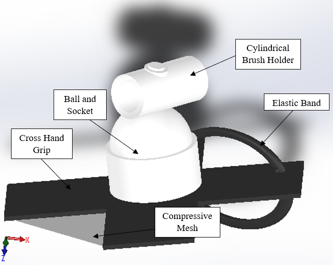
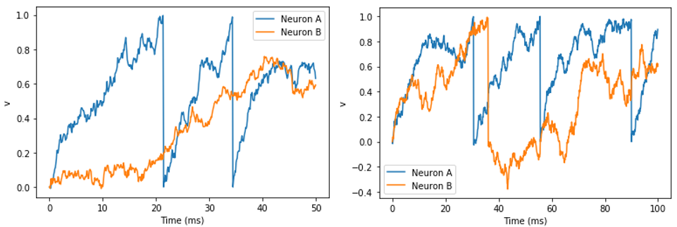
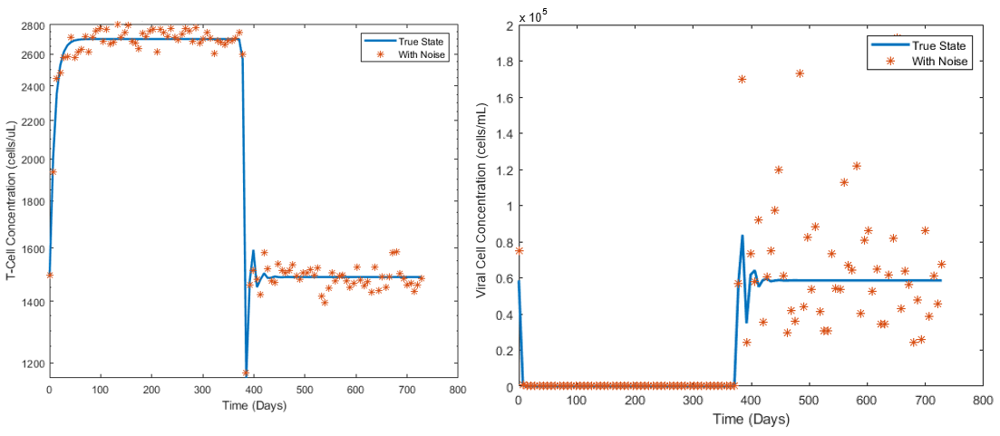

Projects
Here's a list of my research and class projects. To learn more information or take a closer look, check out the supplemental infomation section of each project!
Junior Design (Spring 2020)
 The work seen above is from my junior design project, where I, alongside a team of two other students, was tasked with creating an adaptive paintbrush device to be used by artists with cerebral palsy. Given the pandemic of COVID-19, we were unable to physically develop a project, yet we were still tasked with creating a virtual prototype as well as a 70 page design report that highlighted all of the technical details of the design and the impacts it would have in terms of social, environmental, and ethical context. With this project, I was assigned team lead and was responsible for guiding my teammates with meeting necessary deadlines and assuring all project requirements were met. Meetings were conducted via Zoom and I held the responsibility in guiding the focus of each meeting towards a particular task related to the project. I learned many valuable skills in project management using Gantt charts, as well as technical writing skills, Arduino coding, and developing models in Solidworks.
Supplemental Information:
Neuronal Model of the Brain (Winter 2020)
 This project involved modeling the neuronal activity of two neurons when introduced to stochastic noise. The figure to the left shows a model of two neurons that are not synapsed and the figure to the right shows a model of the same two neurons but with a synapse. Both models introduce an aspect of stochastic noise with a random distribution pattern. This model reflects that when two neurons synapse with one another, their action potentials spike closer together in time. Yet, the introduction of noise creates delays within action potential spikes, as seen by the randomized time span between spikes. This noise can be commonly found in neuronal diseases such as Parkinson’s and Alzheimers. The model was generated using differential equations in the Brian 2.0 package of Python, and coded in the Jupyter IDE.
HIV Drug Therapy Model (Fall 2019)
 This project attempted to model the combination HIV drug therapy known as HAART therapy. It was my final project for my biomedical modeling and simulation class, where we expanded on skill using MATLAB and Simulink. The data was collected from the IrsiCaixa HIV research foundation in Barcelona, Spain. Each patient’s healthy T-Cell and viral cell concentration were monitored over the course of two years with one year on-therapy, and one year off-therapy. This model consisted of a variety of different parameters that went into three differential equations, and the parameter that controlled the change in concentration was the mass action infection rate. Other parameters included regeneration rate and death rate. The results of this project demonstrate that when a patient is diagnosed with HIV, no therapy can completely eradicate the disease, and the ultimate outcome is treatment for the rest of the patient’s life. This project was coded in MATLAB.
Supplemental Information:
Twenty-Eight UI Card Game (Summer 2019)
 This user interface card game invovled developing a game in Java and having it run on the command window.
This project expanded on my object oriented programming skills inspired a career involving programming.
Above is the mid-state memory diagram of the game, containing all of the game’s classes and methods.
This project tested my knowledge of object oriented programming and also tested my creativity on how
to develop a simple, yet fun game.
This user interface card game invovled developing a game in Java and having it run on the command window.
This project expanded on my object oriented programming skills inspired a career involving programming.
Above is the mid-state memory diagram of the game, containing all of the game’s classes and methods.
This project tested my knowledge of object oriented programming and also tested my creativity on how
to develop a simple, yet fun game.